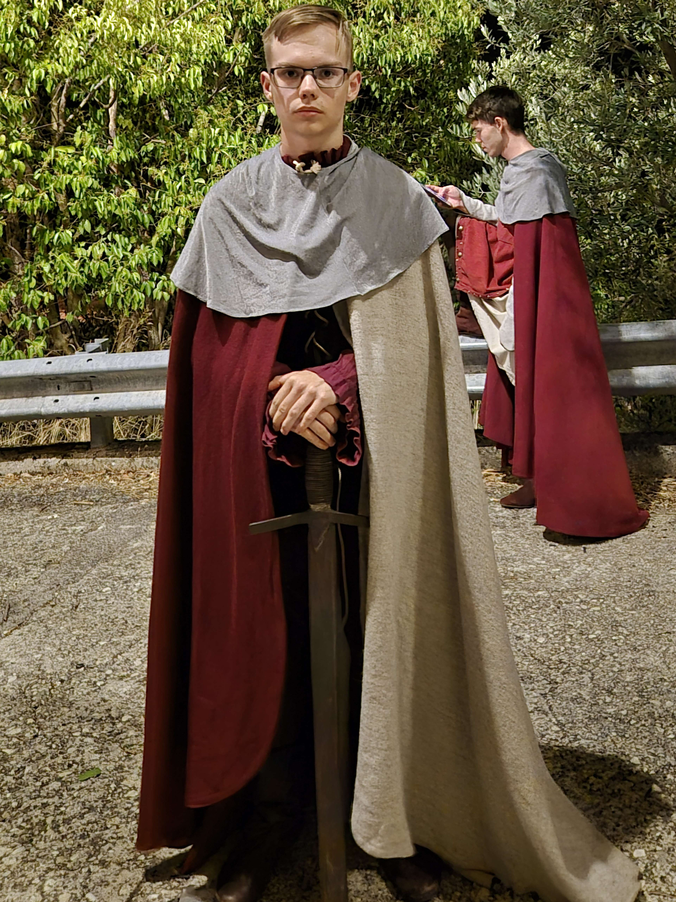

Hello! You can call me Mons Reinus.

Thats not my real name ofcourse but it is close.
I was born in Estonia and I am still living there.
If you want to be my friend you can find me on slack as Mons Reinus
If you want to check out my hobbies you can do that here
Currently I am working on a few (like always)
1. I am making a card game, the progress can be seen on my stardance profile (if i finally update it)
You can check it out hereI am also planning on making some gamedev videos on my youtube channel, which you can find in the contact section
Because I want more organization, then this section is specifically for my hobbies
Cooking and baking
Programming
Playing video games
I also have a bunch of minor hobbies that ceep rotating
Cubing
Cars and engines
Cosplay
Drawing
If I remember to I might also update what my newest hobby is on my twitter(X)